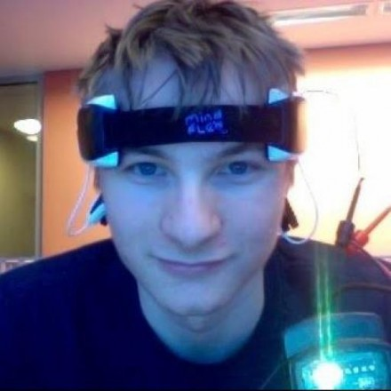

Teaching Crew
Kai Austin | Instructor
WEBSITE Class of '15Cory Dolphin | Ninja
Class of '14Madison May | Ninja
GITHUB Class of '16

This Independent Study is a chillaxing beginners course that will help you set up on online portfolio on the web you are not ashamed to put on your resume, and learn how to make awesome websites. We will give you a solid understanding of the web, a concept of good website design, and a strong foundation so that pursuit in future web development endeavors will be a breeze.
Students will learn how to use HTML/HTML5, CSS/CSS3, and Javascript, but other awesome stuff like jQuery, github, and other JS libraries of choice. They will develop skills required in other Olin classes, such as POE, HFID, and Software Design, but are never taught.
With a focus on making work worth showing, every student will have an online portfolio set up by the end of the semester.
Tues/Fri 3:20 - 5pm
AC 128, Olin College of Engineering